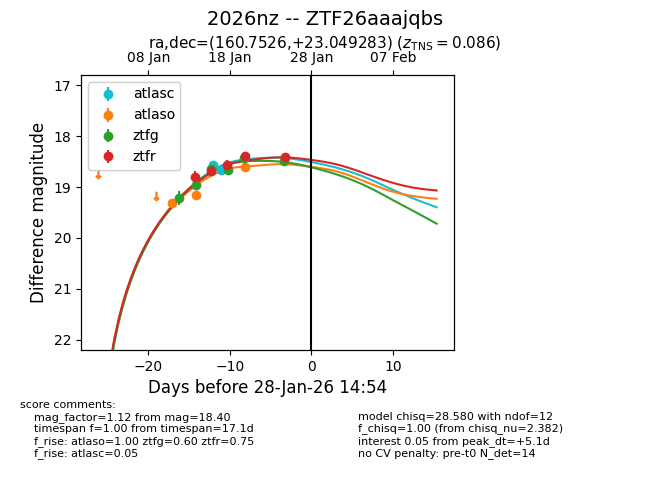
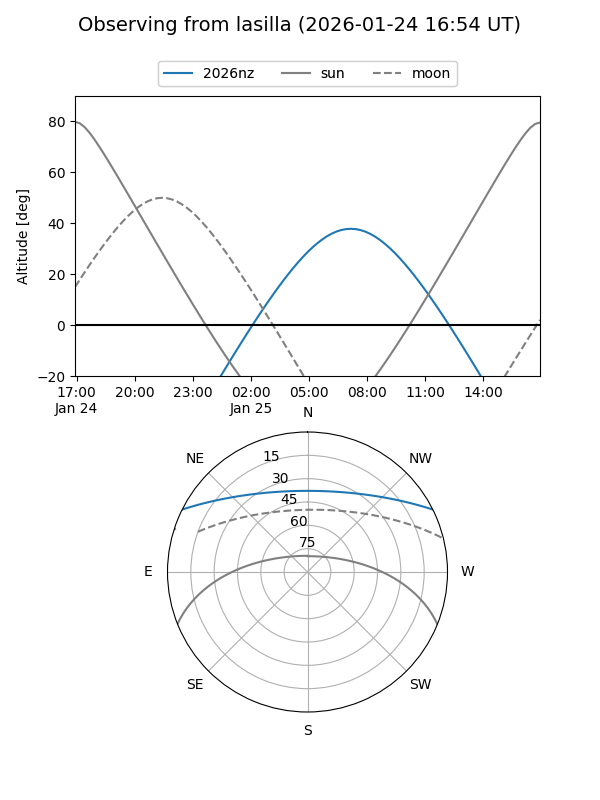
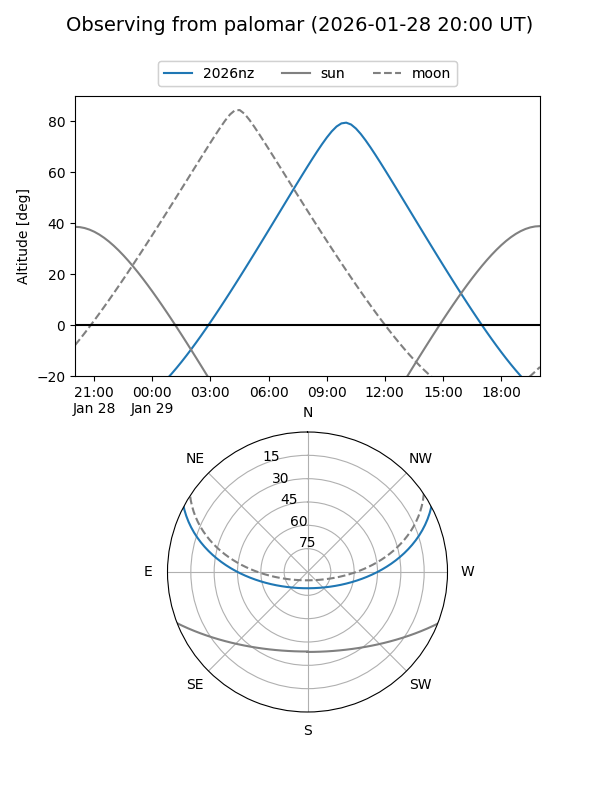
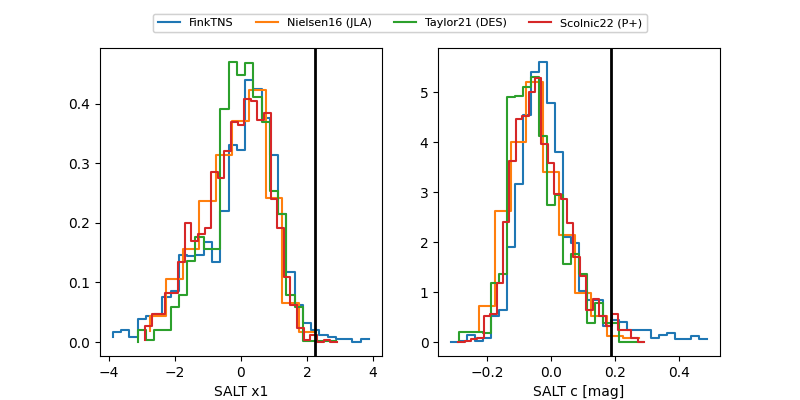

2026nz
Target 2026nz at 2026-01-29 05:11
Aliases and brokers:
FINK: link
Lasair: link
ALeRCE: link
TNS: link
YSE: link
alt names
ZTF26aaajqbs (ztf,fink_ztf)
2026nz (tns,yse)
Coordinates:
equatorial (ra, dec) = 160.7526,+23.04928
equatorial (HMS+DMS) = 10:43:00.62,+23:02:57.42
galactic (l, b) = (213.7472,+60.71727)
Flags:
confirmed ia
Photometry:
last atlasc=18.67, atlaso=18.62, ztfg=18.49, ztfr=18.40
2 atlasc, 3 atlaso, 6 ztfg, 5 ztfr detections
Lightcurve

Visibility


Additional plots
